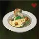

This dish will warm your soul while also keeping you physically warm (seriously, these peppers can make you belch fire). One of the first recipes found by link - claims to have helped a mysterious old man who lives on Hyrule's great plateau. He has included the journal of the mysterious old man below.
"On this desolate plateau, the only pleasure that brings me comfort is cooking. And today, I outdid myself! Truly, I created the perfect dish. I call it... spicy meat and seafood fry. This recipe not only restores health, but it also keeps me warm, even when traveling in the snowy mountains. With this dish on my side, I no longer have need of that itchy warm doublet. I do not know how I allowed this to happen, but it seems I forgot to write down a very important recipe. I know it contained raw meat and spicy pepper. However... I simply cannot remember what else I used! My age is catching up to me. Sadly, on this lonely plateau, I have only my own knowledge and memory to rely on. Still... If I did find someone who knew the missing ingredient, I would happily reward them with my warm doublet. However, it seems unlikely that such a miraculous wish will even be fulfilled."

Click the images below to see Link's other recipes!
